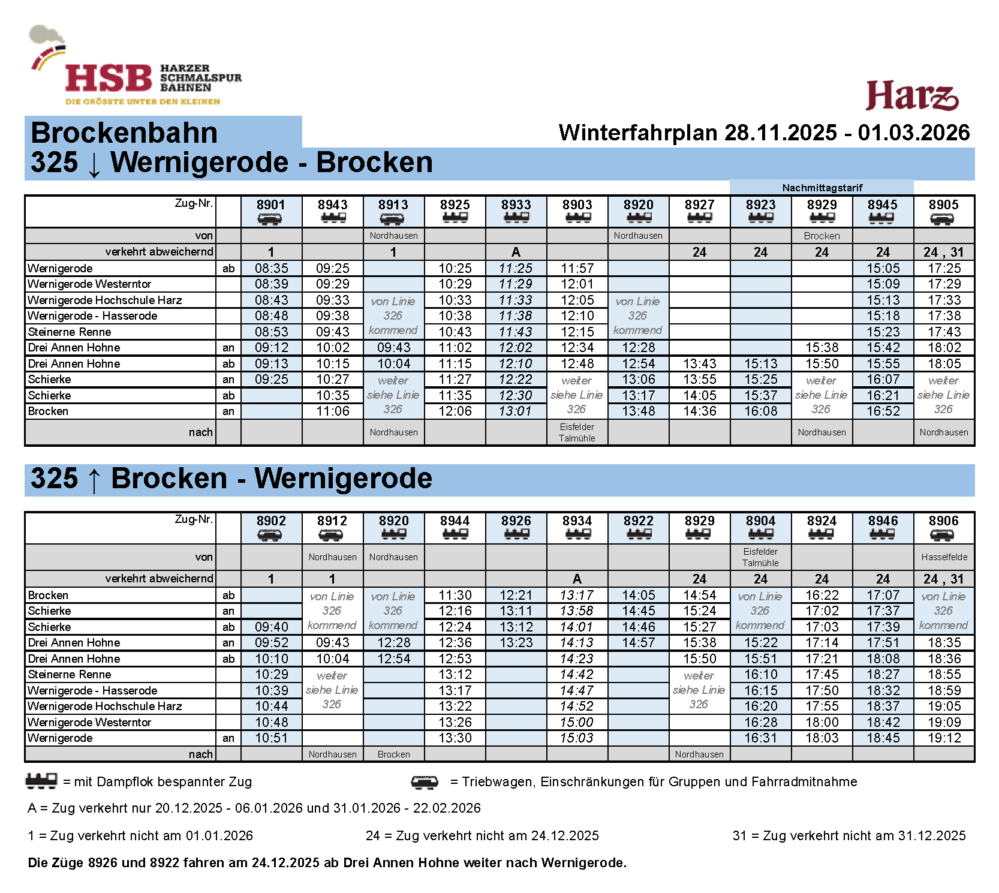
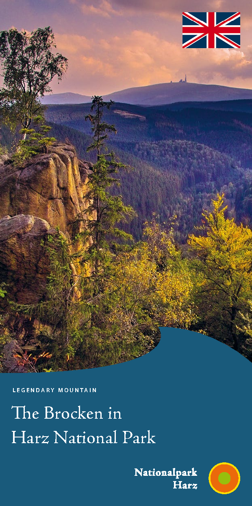
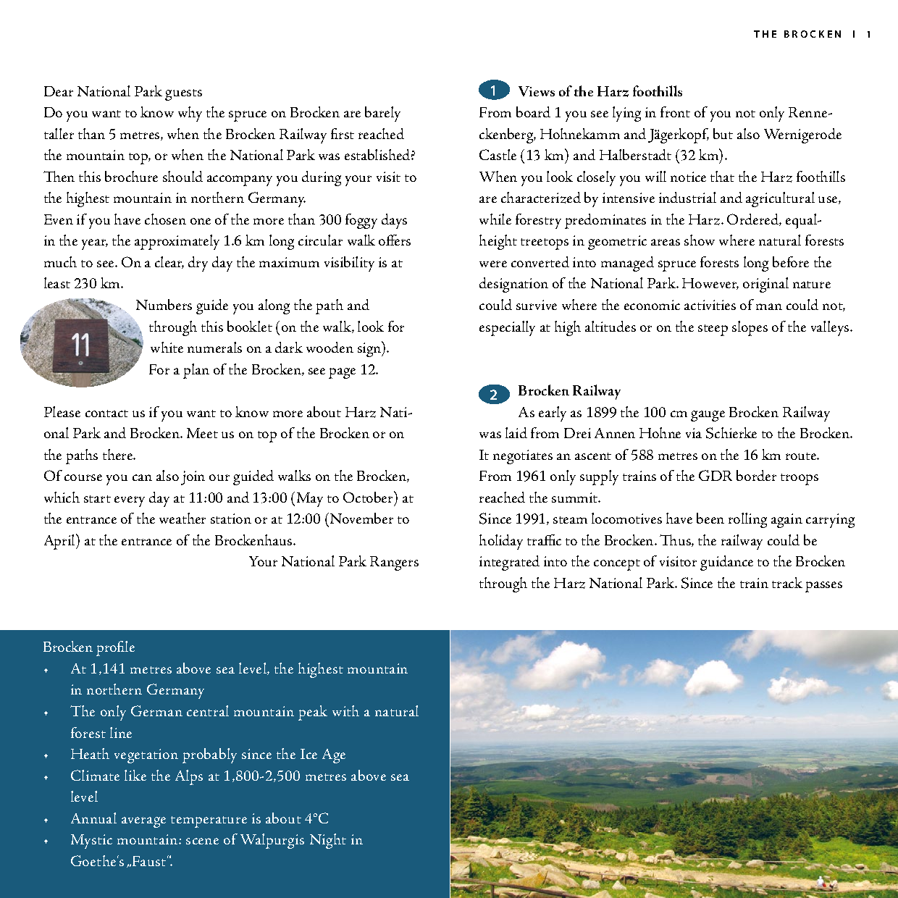

這些小鎮和漢諾威、柏林的相對位置
哈茨山脈（Harz）位於北德中央丘陵，是漢諾威東南方與柏林西南方的天然雪山屏障與昔日東西德冷戰前線。
| 項目 | 方案 A (快閃 24 分鐘 · 推薦) | 方案 B (停留 2 小時 11 分) |
|---|---|---|
| 山頂停留時間 | 11:06 ～ 11:30 (24 分鐘) | 11:06 ～ 13:17 (2 小時 11 分鐘) |
| 山頂核心活動 | 火車加水調頭、1,141m 界石合照、雷達球罩與圍牆遠眺 | 加訪 Brockenhaus 博物館、喝熱湯、走訪女巫祭壇石陣 |
| 下山火車班次 | 8944 (11:30 發車 ➔ 13:29 抵市區) | 8934 (13:17 發車 ➔ 15:03 抵市區) |
| 午餐安排 | 13:30 返老城餐廳享用熱食大餐或年輪蛋糕 | 山頂 Brockenwirt 簡易自助餐（香腸、牛肉湯） |
| 老城漫步時間 | 約 2.5 小時（14:00～16:45 日落前充分觀覽） | 約 1.5 小時（15:15～16:45 重點精華拍照） |
| 城堡入場時段 | 17:15 入場（最後入場 17:30，開放至 18:00） | 17:15 入場（最後入場 17:30，開放至 18:00） |
| 防寒舒適度 | 極佳（短時間速覽，避免在強風暴雪中久候受凍） | 需在零下 10°C 強風環境活動，多數時間需待室內 |
搭乘德鐵 RE4 直達快車（32 分鐘）
從 Goslar 車站搭乘 RE4（往 Halle 方向），直達 Wernigerode Hbf。適用 Deutschlandticket（49€ 通票），無須另購車票。
購買 Brocken 來回票 (€65) 並提早至月台候車
出德鐵站右轉 50 公尺即抵 HSB 窄軌車站窗口，購買 €65 來回票（自由座）。建議發車前 25 分鐘上月台排隊，選擇靠窗座位或室外透風觀景平台（Plattform）。
搭乘蒸汽火車穿越哈茨雪原林海
途經 Drei Annen Hohne (10:15) 與 Schierke (10:35)，窗外由針葉林逐漸轉為積雪覆蓋的副極地高山凍原，11:06 抵達峰頂終點站。
峰頂核心速覽：冷戰圍牆、雷達球罩、火車加水噴煙
• 出站步行約 80 公尺至 1,141m 標誌石碑 合影留念。
• 仰望冷戰時期蘇聯/東德的 巨型雷達天線罩 (Radom) 與 布羅肯圍牆 (Brockenmauer) 遺址。
• 觀賞蒸汽機車在雪地中加水噴煙與調頭作業。
• 11:25 返回原車（8944 號），11:30 準時發車折返下山。
搭乘 8944 下山 ＆ 13:30 老城溫暖午餐
13:29 返抵市區。前往老城餐廳享用傳統德國熱食、烤豬腳，或在百年老店品嚐炭火烘烤的哈茨年輪蛋糕（Harzer Baumkuchen）。
踏雪健步 ＆ Brockenhaus 博物館參觀
• 參觀三層樓的 Brockenhaus 博物館，了解冷戰竊聽歷史與高山自然生態。
• 於 Brockenwirt 餐廳享用熱匈牙利牛肉濃湯（Gulaschsuppe）與香腸避寒。
• 踏雪前往《浮士德》女巫傳說的「女巫祭壇 (Hexenaltar)」花崗岩巨石陣。
• 13:00 提前至月台等候，搭乘 13:17 的加開直達車 8934 號（15:03 抵市區）。
搭乘 8934 直達車次返抵市區
此為 Ⓓ 聖誕連假加開直達車次，中途無須換車，於 15:03 準時返抵 Wernigerode Hbf。
漫步木桁架老城（掌握日落前天光）
韋尼格羅德城堡：節慶特展 ＆ 俯瞰老城夜景
自花鐘搭乘 Bimmelbahn 接駁小火車（或漫步雪徑 15 分鐘）上山，約 17:15 購票入場（門票約 €9，最後入場 17:30，18:00 閉館）。此時白天旅行團已散去，可在安靜氛圍下欣賞 19 世紀伯爵聖誕宴席特展與老城燈火。
漫步下山 ＆ 於 Winterzauber 市集享用熱酒晚餐
步行 15 分鐘下山至市政廳後方之 Winterzauber 冬季市集（營業至 21:00）。品嚐熱香料酒（Glühwein）佐以烤香腸、炭火肉排或炸馬鈴薯餅。
搭乘 RE21 直達快車輕鬆返回 Goslar
首選班次：20:18 發車，20:53 返抵 Goslar（車程 35 分鐘）。
備案班次：早班 19:21 (RE4) 或晚班 21:21 (RE4)，每小時固定一班直達車。
12/28 官方完整火車時刻表
包含 HSB 窄軌蒸汽火車冬季 325 號表（上山/下山全班次）與德鐵 DB Goslar 往返直達表。
HSB ✕ 德鐵 DB 官方原始冬季時刻表（Kursbuchstrecke 325 原件）
一手文獻證明：直接擷取自 Deutsche Bahn 官方電子時刻手冊（Elektronisches Kursbuch）與 Harzer Schmalspurbahnen 官方發布之原廠冬季行車手冊（KBS 325：Wernigerode Hbf ⟷ Drei Annen Hohne ⟷ Brocken，冬期適用 28.11.2025–01.03.2026）。完整保留原廠排版、原始車次編號（包含推薦班次 8943、8944、8934 與僅到半山腰之 8926）及蒸氣火車符號圖例：

Dampflok = 經典蒸氣火車運行班次；方案 A 為 8944，方案 B 為 8934。
Quelle: kursbuch.bahn.de / hsb-wr.de (Stand: Winter 2025/2026)
布羅肯窄軌蒸汽火車（Brockenbahn）核心班表（即時速查版）
以下為 12/28（週一，連假 Ⓓ 適用）直達布羅肯峰頂（Bergfahrt）與下山（Talfahrt）核心車次直讀表格，直接依原始班表格式原汁原味嵌入：
| 車次編號 | 車種 | 韋尼格羅德 (Wernigerode) | Drei Annen Hohne | 夏爾克 (Schierke) | 抵達布羅肯峰頂 (Bf Brocken) | 班次說明 |
|---|---|---|---|---|---|---|
| 8943 | 蒸汽火車 | 09:25 | 10:15 | 10:35 | 11:06 | 早班直達登頂車次（最推薦 ⭐） |
| 8925 | 蒸汽火車 | 10:25 | 11:15 | 11:35 | 12:05 | 熱門直達登頂車次 |
| 8933 | 蒸汽火車 | 11:25 | 12:10 | 12:30 | 13:00 | Ⓓ 聖誕連假加開車次（12/28 正常運行） |
| 8920 | 蒸汽火車 | — | 12:54 | 13:17 | 13:48 | 由 Nordhausen 方向開來，於 Drei Annen Hohne 登頂 |
| 8927 | 蒸汽火車 | — | 13:43 | 14:05 | 14:35 | 由 Drei Annen Hohne 發車登頂 |
| 8923 | 蒸汽火車 | — | 15:13 | 15:37 | 16:07 | 由 Drei Annen Hohne 發車登頂 |
| 車次編號 | 車種 | 布羅肯峰頂開車 | 夏爾克 (Schierke) | Drei Annen Hohne | 抵達 Wernigerode | 班次說明與避坑提醒 |
|---|---|---|---|---|---|---|
| 8944 ⚡ | 蒸汽火車 | 11:30 | 12:03 | 12:28 | 13:29 | 【方案 A 核心】8943 原車原班折返直達！峰頂快閃 24 分鐘避寒 |
| 8926 ⚠️ | 蒸汽火車 | 12:21 | 12:54 | 13:16 (終點) | 不到市區 | ⚠️ 避雷：僅開到半山腰，回不到 Wernigerode 市區，千萬不要搭錯！ |
| 8934 Ⓓ | 蒸汽火車 | 13:17 | 13:47 | 14:14 | 15:03 | 【方案 B 核心】Ⓓ 聖誕連假加開直達車！峰頂停留 2 小時 11 分 |
| 8922 | 蒸汽火車 | 14:05 | 14:35 | 14:57 (轉乘) | 15:50 | 需在 Drei Annen Hohne 等候轉乘 |
| 8924 | 蒸汽火車 | 16:22 | 16:53 | 17:15 | 18:02 | 直達市區（抵達時天色已全黑） |
| 8946 | 蒸汽火車 | 17:07 | 17:41 | 18:02 | 18:44 | 當日末班下山直達車 |
HSB 登頂上山時刻表 (Bergfahrt: Wernigerode ➔ Brocken 峰頂)
| 車次編號 | 車種 | Wernigerode 發車 | Drei Annen Hohne | Schierke 發車 | 抵達 Brocken 峰頂 | 運行說明 |
|---|---|---|---|---|---|---|
| 8943 ★ | 蒸汽火車 | 09:25 | 10:15 | 10:35 | 11:06 | 黃金直達首選 (每日行駛) |
| 8925 | 蒸汽火車 | 10:25 | 11:15 | 11:34 | 12:05 | 每日行駛 |
| 8933 Ⓓ | 蒸汽火車 | 11:25 | 12:12 | 12:30 | 13:00 | Ⓓ 聖誕假每日加開 (19.12-09.01) |
| 8945 | 蒸汽火車 | 15:05 | 15:58 | 16:18 | 16:51 | 太晚抵達，已無下山車次 |
HSB 登頂下山時刻表 (Talfahrt: Brocken 峰頂 ➔ Wernigerode 市區)
| 車次編號 | 車種 | Brocken 峰頂開車 | Schierke 發車 | Drei Annen Hohne | 抵達 Wernigerode | 運行說明 |
|---|---|---|---|---|---|---|
| 8944 ⚡ | 蒸汽火車 | 11:30 | 12:03 | 12:28 | 13:29 | 【方案 A 核心】8943 原車折返直達！ |
| 8926 | 蒸汽火車 | 12:21 | 12:54 | 13:16 (終點) | 不進市區 | ⚠️ 僅到半山腰，回不了市區請勿搭乘 |
| 8934 Ⓓ ★ | 蒸汽火車 | 13:17 | 13:47 | 14:14 | 15:03 | 【方案 B 核心】Ⓓ 聖誕加開直達車 |
| 8924 | 蒸汽火車 | 16:22 | 16:53 | 17:15 | 18:02 | 直達市區 (抵達已天黑) |
| 8946 | 蒸汽火車 | 17:07 | 17:41 | 18:02 | 18:44 | 末班下山直達車 |
德鐵 DB 直達快車時刻表 (Goslar 往返 Wernigerode Hbf)
| 車次 | Goslar 發車 | 抵達 Wernigerode | 備註 |
|---|---|---|---|
| RE21 | 07:05 | 07:38 | 太早 |
| RE4 ★ | 08:06 | 08:38 | 黃金去程 (銜接 09:25 蒸汽火車) |
| RE21 | 09:05 | 09:37 | 會錯過 09:25 早班車 |
| RE4 | 10:06 | 10:38 | 可接 11:25 加開車 |
| 車次 | Wernigerode 發車 | 抵達 Goslar | 備註 |
|---|---|---|---|
| RE4 | 17:21 | 17:54 | 早回程備案 |
| RE21 | 18:18 | 18:53 | 城堡閉館後直接回 |
| RE4 | 19:21 | 19:54 | 逛完市集可搭 |
| RE21 ★ | 20:18 | 20:53 | 最推薦回程 (晚餐後剛好) |
| RE4 | 21:21 | 21:54 | 深夜末班備案 |
山頂到底有多大？為什麼 24 分鐘完全逛得完？
依據哈茨國家公園官方 Brocken Guide 地理數據客觀剖析。
物理距離與冬季現況
- • 核心地標都在方圓 100~200 公尺內：車站出口、1,141m 標誌石碑、雷達球罩、冷戰圍牆、女巫巨石全部集中於月台旁，步行數步即可全部打卡。
- • 外圈環形步道（Brockenrundweg）長 1.6 公里：平日散步約 30 分鐘，但在 12 月底零下 10°C 暴風雪下只剩白茫凍原，冬季強烈不建議走外圈。
- • 高山植物園（Brockengarten）冬季關閉：埋於厚雪之下（僅 5 月中至 10 月中開放），冬季完全無植被可見。
冷戰鐵幕前線與交界特色
- • 蘇聯與東德 Stasi 最高竊聽要塞：冷戰時期山頂直接封閉 30 年，作為代號「葉尼塞」與「烏拉爾」的無線電監聽基地，攔截西德全境電話與北約軍訊。
- • 高山上的「布羅肯圍牆 (Brockenmauer)」：當年東德在海拔千米峰頂用 3.6 米混凝土板圍了一整圈防叛逃圍牆，至今仍保留一段紀念石牆。
- • 歌德《浮士德》與女巫魔宴之山：相傳每年 4/30 女巫在峰頂共舞；常年大霧背光時人影放大投射雲海，形成世界知名的「布羅肯幽靈 (Brockengespenst)」。
韋尼格羅德城堡：最後入場策略 ＆ 冬季特展
避開日間人潮、享受點燈暖光與俯瞰老城夜景的極致安排。
• 聖誕新年連假：10:00 ～ 18:00 開放
• 最後入場時間：17:30
• 建議抵達時間：17:15 前購票進場
• 成人門票：約 €9（現場直接購買）
• Festliches WinterSchloß 年度大型特展
• 重現 150 年前 19 世紀伯爵家族聖誕盛宴長桌
• 吹製玻璃、古董天使飾品與壁爐古典暖光
• 城堡小教堂整點古老鐘聲迴轉山谷
• 搭乘地點：老城市政廳旁花鐘 (Blumenuhr)
• 票價：來回 €8（約 15 分鐘直達城堡大門）
• 徒步備案：沿森林步道上山步行約 15~20 分鐘
• 出館後（18:00）剛好在城堡露台看老城全黑夜景
票價矩陣與關鍵乘車規則
HSB 布羅肯峰統一定價（Brockentarif）明細
| 票種 | 成人 (15歲以上) | 兒童 (6～14歲) | 6歲以下幼兒 | 德鐵通票適用性 |
|---|---|---|---|---|
| 單程票 (Einfache Fahrt) | €43.00 | €26.00 | 免費 | 不適用 |
| 來回票 (Hin- und Rückfahrt) ★ | €65.00 | €39.00 | 免費 | 不適用 (需自購) |
| Goslar ↔ Wernigerode (DB RE4/21) | 可用 Deutschlandticket (49€通票) 或單買約 €10 | 100% 適用 | ||
買好 €65 來回票後，下山任何一班都能搭，不需要改票，隨天氣心情決定何時下山！
普通蒸汽火車不對個人劃位，不會客滿「完售」，提早 25 分鐘至月台排隊即可選好窗位。
哈茨國家公園官方導覽手冊 (Brocken English Guide PDF)
國家公園管理處（Nationalparkverwaltung Harz）官方出版之布羅肯峰頂步道地圖、冷戰史蹟與地標手冊。


官方一手連結與即時查詢管道
出發前請透過以下各單位之官方入口，實時確認即時運行狀態、天候警報與即時影像：
哈茨窄軌蒸汽火車營運主體，提供冬季時刻表、票價規範及每日即時行車異動通告。
城堡管理委員會官方入口，提供 12 月底冬季節慶特展「WinterSchloß」與入館開放時刻。
Goslar ↔ Wernigerode 直達區域快車（RE4 / RE21）即時動態、月台變更與班次查詢。
德國氣象局（DWD）布羅肯氣象站即時觀測數據。強風可能導致蒸汽火車停駛，出發當日必看。